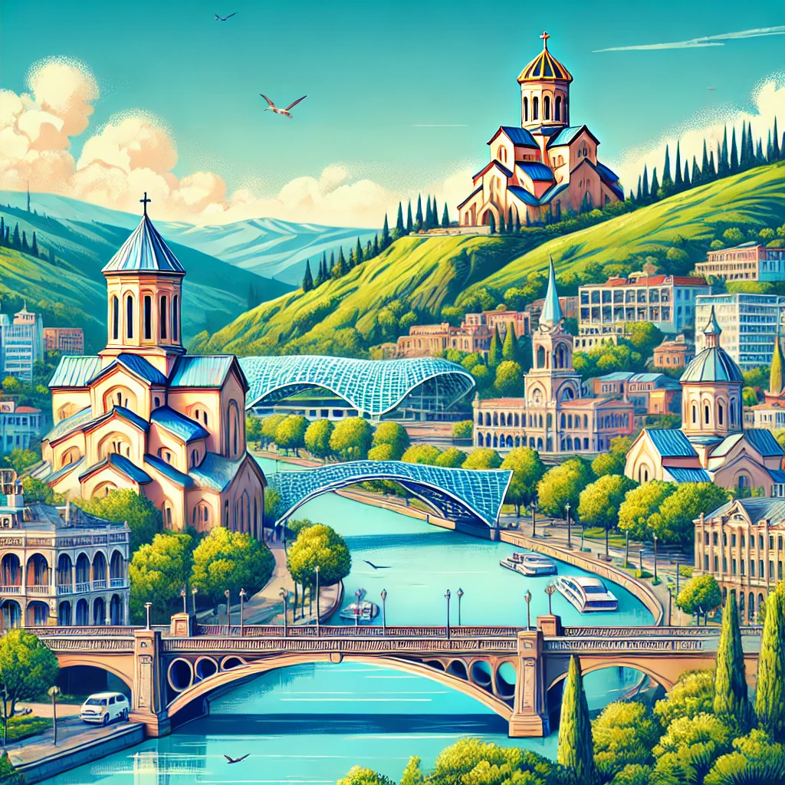

მარტვილის მუნიციპალიტეტი გამოირჩევა ულამაზესი ბუნებითა და კულტურულ-ისტორიული ძეგლების სიმრავლით. რაიონი შთამბეჭდავი ალპური ტბებით, ჩანჩქერებით, მღვიმეებით თუ უმშვენიერესი ხეობებით მრავალ ბუნებისა და მოგზაურობის მოყვარულს იზიდავს. განსაკუთრებული პოპულარობით სარგებლობს ლებარდეს ტბები, ონიორეს, წაჩხურუს, კაღუს, აბჰესისა და ტობის ჩანჩქერები, მარტვილის კანიონი, ბალდის კანიონი და სხვა. მარტვილში მრავალ შესანიშნავ ადგილს იპოვნით, როგორც თავგადასავლებით სავსე ლაშქრობის მოსაწყობად, ასევე მსუბუქი გასვლებისთვის თუ საოჯახო პიკნიკებისთვის. რაიონი მდიდარია კულტურული ძეგლებითაც, აქ ნახავთ უძველეს, საინტერესო არქიტექტურის მქონე ტაძრებსა და ციხე-სიმაგრეებს.
კონტენტი
ჩვენი კონტენტი
სანამ მიმართულებას აირჩევ, შეამოწმე ამინდი:
აქ მოცემულია პოსტები სხვადასხვა ტურისტული მიმართულებებზე. გადაავლე თვალი და გააკეთე სასურველი არჩევანი..
მარტვილი
მარტვილის მუნიციპალიტეტი გამოირჩევა ულამაზესი ბუნებითა და კულტურულ-ისტორიული ძეგლების სიმრავლით. ...
მცხეთა
მცხეთის მუნიციპალიტეტი კულტურული ძეგლების სიმრავლითა და ბუნების მრავალფეროვნებით გამოირჩევა. ...
მცხეთის მუნიციპალიტეტი კულტურული ძეგლების სიმრავლითა და ბუნების მრავალფეროვნებით გამოირჩევა. რაიონში მდებარეობს წოდორეთისა და მუხათგვერდის ტბები. შეგიძლიათ დაგეგმოთ საინტერესო მარშრუტები საგურამოს ნაკრძალსა და მცხეთის ქედებზე, სადაც ლამაზი ტყეებითა და მშვენიერი ხედებით დატკბებით. ერთ-ერთი პოპულარული მარშრუტია მცხეთა-არმაზის ციხის ბილიკი, ამ მარტივი, ერთდღიანი გასვლისას იხილავთ, როგორც მრავალფეროვან, ულამაზეს ხედებს, ასევე ისტორიულ-კულტურული მნიშვნელობის ძეგლებს.


ქუთაისი
ქუთაისი და მისი მიმდებარე ტერიტორიები კულტურული ძეგლების სიმრავლითა და ულამაზესი ...
ქუთაისი და მისი მიმდებარე ტერიტორიები კულტურული ძეგლების სიმრავლითა და ულამაზესი ბუნებით გამოირჩევა. თუკი ქუთაისს ესტუმრებით აუცილებლად უნდა მოინახულოთ ქუთაისთან ახლოს, წყალტუბოს მუნიციპალიტეტში მდებარე სათაფლიისა და პრომეთეს მღვიმეები. იმერეთში მრავალი ულამაზესი კარსტული მღვიმეა. სათაფლიაში გარდა სტალაქტიდებისა და სტალაგმიტების წყებით შემკული ჯადოსნური დარბაზებისა, დინოზავრის ნაკვალევის ნახვასა და პრეისტორიულ სამყაროში მოგზაურობას შეძლებთ.

თელავი
თელავი ძალიან ლამაზი რაიონია, რომელიც გამორჩეულია სხვადასხვა ეპოქის კულტურული ძეგლების ...
თელავი ძალიან ლამაზი რაიონია, რომელიც გამორჩეულია სხვადასხვა ეპოქის კულტურული ძეგლების სიმრავლით. აქ ნახავთ ბრინჯაოს ხანის ნამოსახლარებს, შუა საუკუნეების, უდიდესი კულტურული მნიშვნელობის მქონე ტაძრებს, სასახლეებისა და ციხესიმაგრეების ნანგრევებს, რომლებიც მრავალი საინტერესო ისტორიისა და გმირობის მომსწრენი არიან. განსაკუთრებით ცნობილია იყალთოს მონასტერი, სადაც არსენ იყალთოელს იყალთოს აკადემია დაუარსებია.


ბორჯომი
ბორჯომის მუნიციპალიტეტი ერთ-ერთი შესანიშნავი ადგილია, დასვენებისთვის, მთის სპორტისთვის, ლაშქრობისთვის თუ ...
ბორჯომის მუნიციპალიტეტი ერთ-ერთი შესანიშნავი ადგილია, დასვენებისთვის, მთის სპორტისთვის, ლაშქრობისთვის თუ ქართული კულტურის მრავალსაუკუნოვანი ნიმუშების გასაცნობად. აქ მრავალი სალაშქრო მარშრუტია ტყეებით, პანორამული ხედებითა და ტბებით. განტვირთვისთვის აუცილებლად უნდა ესტუმროთ ბორჯომის გოგირდოვან აუზს. რაიონში სხვდასხვა ეპოქისა და კულტურის ბევრი მნიშვნელოვანი ძეგლია შემონახული. ათასწლეულების ისტორიის მქონე მეგალითები, ანტიკური კულტურის ნაშთები, ციხე-სიმაგრეები, რომლებიც მრავალი ბრძოლისა და სიმამაცის მოწმენი გამხდარან, ცნობილი და გამორჩეული ტაძრები ბევრს ამბობენ საქართველოს წარსულსა და კულტურულ განვითარებაზე.